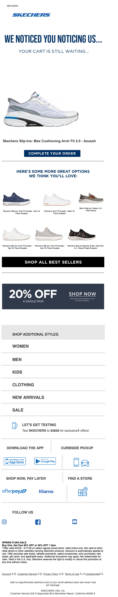

Your Items Are Waiting!
| From | SKECHERS <hello@msgs.skechers.com> |
| Received | 2026-04-07 13:21 UTC |
| Score | 5.5/10 |
1. Executive Summary
A competent but cluttered abandoned cart email. The playful hook ("We noticed you noticing us...") lands well, and the personalized cart item + CTA are correctly prioritized near the top. However, the email keeps adding modules — promotions, cross-sells, app downloads, curbside pickup, BNPL, store locator — until the single job of this email (recover the cart) is buried. The 20% off banner appearing mid-scroll without clearly connecting it to the cart item is a wasted conversion lever.
2. Business Impact Score: **5.5 / 10**
Strong intent, diluted execution. The abandoned cart mechanic is sound but the email is doing too many jobs at once.
3. What's Working
- Hero copy is confident. "We noticed you noticing us... Your cart is still waiting..." is punchy and on-brand. Better than generic "You left something behind."
- Cart item is surfaced early. The shoe image with a "Complete Your Order" CTA is above the fold and prominent. Clear primary action.
- 20% off offer exists. For an abandoned cart email, a discount is a smart recovery tool. It's present.
- Cross-sell module is structured. "Here's some more great options we think you'll love" provides relevant alternatives if the cart item isn't the right fit.
4. What's Weak
- Product label reads oddly. Under the hero shoe, the text appears to read "Members Big-toe: Max Cushioning Air-Fit 2.0 – Aerofit" — "Big-toe" reads like a data/personalization artifact or an unusual label. If this is displaying a member nickname or product attribute incorrectly, it's confusing and undermines trust.
- 20% off is disconnected. The discount banner appears well below the fold, after the cross-sell grid and "Shop All Best Sellers." It should be anchored to the cart item — either as a callout under the CTA or in the hero — not floating mid-email with a generic "Shop Now."
- Module overload. Below the fold: cross-sell grid → Best Sellers CTA → 20% off banner → category nav → text opt-in → curbside pickup → BNPL → store locator → social follow. That's 8+ competing modules. Each one reduces the chance the user clicks "Complete Your Order."
- "Let's Get Texting" in an email. The SMS opt-in module is noise here. It's a channel-switch ask inside a conversion email — wrong context, wrong moment.
- Cross-sell thumbnails are tiny. The four recommended shoes in the recommendation grid are very small. Product images at this size don't drive desire.
5. Recommendations
1. Move the 20% off offer directly under the cart item CTA — tie the incentive to the recovery action explicitly ("Complete your order — use code COME BACK for 20% off").
2. Cut the email in half. Remove or footer-relegate: SMS opt-in, curbside pickup, BNPL, store locator. These belong in a nurture email, not an abandoned cart recovery.
3. Verify the product label rendering under the cart shoe. "Big-toe" as a visible string needs investigation — if it's a personalization field or member attribute, it should be validated before send.
4. Increase cross-sell image size or reduce to 2 hero alternatives with larger images and prices shown.
5. Add urgency or scarcity signal — inventory countdown, "X others are looking at this" — anywhere near the cart item CTA. The email is missing time pressure entirely.
6. Bottom Line
Skechers knows how to write an abandoned cart subject line and hero. The problem is what comes after: the email tries to be a full marketing blast disguised as a cart recovery, and the conversion offer (20% off) is buried rather than weaponized. Trim aggressively, tie the discount to the cart action, and fix the product label. This email could perform meaningfully better with less content, not more.
7. Evidence
| Module | Observation |
|---|---|
| Overall purpose | Abandoned cart recovery — single item left in cart |
| Hero / primary value prop | "We noticed you noticing us... your cart is still waiting." Strong voice. Cart shoe shown with "Complete Your Order" CTA — correct hierarchy |
| Membership / benefits | "Members" label appears in the product callout — personalization present but potentially rendering with unexpected text ("Big-toe") |
| Product discoverability / recommendation module | 4-item cross-sell grid labeled "More great options we think you'll love" — relevant but thumbnails too small to drive desire |
| Utility / secondary modules | 20% off banner, Shop All Best Sellers, category nav (Women/Men/Kids/Clothing/New Arrivals/Sale), SMS opt-in, curbside pickup, BNPL, store locator, social follow — all present and all competing |
| Bugs / friction / clarity issues | Product label under hero shoe reads "Members Big-toe: Max Cushioning Air-Fit 2.0 – Aerofit" — "Big-toe" is visually anomalous and potentially a data rendering issue |
## Technical Audit
## Technical Audit — Skechers "Your Items Are Waiting!" (Cart Abandonment)
Sender: hello@msgs.skechers.com | ESP/Platform: Attentive (attentivemail.com)
1. Technical Summary
Table-based HTML email sent via Attentive with click-tracking redirects. All tracked links and image assets are served over plain HTTP rather than HTTPS, which is the most significant infrastructure finding.
2. Link & Tracking Issues
HTTP tracking URLs (high severity)
Every tracked link uses http:// instead of https://:
- Web version:
http://skechers.attentivemail.com/ls/click?upn=u001.LNc6VorXOZu5a… - Logo CTA:
http://skechers.attentivemail.com/ls/click?upn=u001.LNc6VorXOZu5a…
The initial redirect hop is unencrypted. Gmail and most modern email clients flag or block mixed-content links. Attentive supports HTTPS redirects — this appears to be a configuration or template issue.
Image assets also over HTTP
<img src="http://image.emails.skechers.co… — images served without TLS. Gmail proxies images through its own cache (which enforces HTTPS), but other clients may block or warn.
target="_blank" without rel attribute
Logo anchor: <a href="http://skechers.attentivemail.com/..." target="_blank"> — missing rel="noopener noreferrer". Low practical risk inside email clients, but worth standardizing.
3. Rendering & Accessibility
Empty <title> tag
<title></title> — blank. Screen readers and some email clients (Apple Mail, Outlook on Mac) expose the title as a label for the email tab/window. Should be set to something descriptive (e.g., "Your cart is waiting — Skechers").
Missing alt attribute on logo image
<img src="http://image.emails.skechers.co… — the truncated source shows no alt= attribute before the src is cut off. If absent, screen readers skip the image silently and image-blocking clients show a broken placeholder with no fallback text.
Preheader padding technique
The preheader uses a mix of ͏ (U+034F, combining grapheme joiner) and (U+00AD, soft hyphen) as invisible spacers. The CGJ character (͏) is non-standard for this use and may render as a visible glyph in some obscure clients. The more reliable approach is zero-width non-breaking spaces (U+FEFF) or plain sequences.
Responsive CSS coverage
Media query breakpoint is max-width:620px. Row-specific overrides are present (row-20, row-21, row-23) but rows 1–19 and 22 have no mobile overrides visible in the truncated source — cannot fully verify without the complete stylesheet.
4. Personalization & Merge Tokens
No merge tokens (e.g., {{first_name}}, {{cart_items}}, Attentive liquid tags) are visible in the rendered preheader or the truncated body. For a cart abandonment trigger, the absence of dynamic product name, image, or price tokens in the visible portion is notable — though the source is truncated and tokens may appear further down. Verify that the cart product block uses Attentive's dynamic content tags and that fallback values are defined for all tokens.
5. Compliance (CAN-SPAM, Unsubscribe, Authentication)
Cannot confirm from truncated source:
- Physical mailing address (required by CAN-SPAM §5(a)(5))
- Unsubscribe mechanism (required by CAN-SPAM §5(a)(3))
- Preference center / opt-out link
These are standard Attentive footer components and are almost certainly present below the fold, but must be confirmed in the full source. CAN-SPAM requires the unsubscribe link to remain functional for at least 30 days post-send.
Authentication headers (DKIM, SPF, DMARC) cannot be assessed from HTML alone — must be pulled from raw message headers. msgs.skechers.com is a dedicated sending subdomain which is correct practice; confirm DKIM d= tag aligns with that subdomain and DMARC policy on skechers.com is at least p=quarantine.
6. Email-to-Site Continuity
All destination URLs are obscured behind Attentive's click-redirect layer (/ls/click?upn=…), so the final landing page URLs and their UTM parameters cannot be decoded from the HTML source alone. To verify:
1. Follow the tracked links manually or via Attentive's link audit tool
2. Confirm all CTAs land on HTTPS pages
3. Confirm UTM parameters are appended: expected pattern for a cart abandonment trigger would be utm_source=attentive&utm_medium=email&utm_campaign=cart_abandonment (or equivalent)
4. Confirm the cart abandonment landing page restores the user's cart session — if the redirect drops the session cookie context, the recovery flow is broken
7. Recommendations
| Priority | Action |
|----------|--------|
| High | Switch all Attentive tracking link URLs from http:// to https:// in the ESP send configuration |
| High | Serve email images from HTTPS CDN endpoint (https://image.emails.skechers.com) |
| Medium | Add descriptive alt text to the logo image and any product images |
| Medium | Set a meaningful <title> tag |
| Medium | Audit Attentive template for cart personalization tokens; ensure fallback values are defined |
| Medium | Verify full-source footer contains physical address and functional unsubscribe link |
| Medium | Decode tracked destination URLs and audit UTM parameters |
| Low | Replace ͏ (U+034F) preheader spacers with U+FEFF or |
| Low | Add rel="noopener noreferrer" to all target="_blank" anchors |
